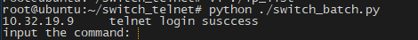

在日常工作中，有时候会遇到需要批量操作多台交换机的情况。而交换机普遍是采用定制系统，默认是telnet登陆，即使换成ssh登陆也无法使用ansible进行统一管理，所以通过python telnetlib库实现了交换机的批量管理(交换机型号为思科2960x)
实现代码如下： switch_telnet.py
#encoding=utf-8
import sys
import telnetlib
import time
def tel(ip,user,password):
tn = telnetlib.Telnet(ip,port=23)
tn.read_until('Verification\r\n\r\nUsername: ')
tn.write(user+'\n')
# tn.set_debuglevel(2)
#password
tn.read_until('Password: ')
tn.write(password+'\n')
#login fail
if tn.read_some()=='\r\nPassword: ':
print '\033[1;31;40m'+ip+'\033[0m'+' password is wrong,login false!'
tn.close()
return 1
#login successs
tn.write('enable\n')
#password
tn.read_until('Password: ')
tn.write(password+'\n')
#enable susccess set terimal length
tn.read_until('Switch#')
tn.write('ter len 0\n')
time.sleep(1)
if tn.read_some()=='ter len 0\r\nSwitch#':
print ip+' telnet login susccess'
return tn
print ip+' terminal length 0 false!'
return 1
def comm(tn,ip,cmd):
tn.write(cmd+'\n')
time.sleep(.2)
result = tn.read_very_eager()
print ('\033[1;31;40m'+ip+'\033[0m'+' '+result)
ip_list = []
user_list = []
password_list = []
tn = []
ip_fp = open('ip_list','r')
ip_fs = ip_fp.read()
ip_fp.close()
fa = ip_fs.split('\n')
for i in range(0,len(fa)-1):
f_res = fa[i].split(',')
ip_list.append(f_res[0])
user_list.append(f_res[1])
password_list.append(f_res[2])
for i in range(0,len(fa)-1):
tn.append(tel(ip_list[i],user_list[i],password_list[i]))
while 1:
cmd = raw_input("input the command: ")
if cmd == 'quit':
for i in range(0,len(fa)-1):
tn[i].write('quit\n')
break
for i in range(0,len(fa)-1):
comm(tn[i],ip_list[i],cmd+'\n')
脚本详解：
主要使用了python的telnetlib库，下面概述常见的几个方法。
telnetlib.Telnet([host[, port[, timeout]]]) 此方法返回一个client对象，可操作
Telnet.read_until(expected[, timeout]) 此方法阻塞读取缓存区输出，匹配expected才继续
Telnet.read_all() 读取所有输出，读取到结束符或者连接中断
Telnet.read_some() 读取至少一个输出
Telnet.read_very_eager() 读取尽量多的输出，但记得要time.sleep()一定时间，不然会因为来不及读取所有数据导致数据丢失
Telnet.write(buffer) 向client对象写入数据，记得换行符\n
Telnet.close() 关闭连接
操作指南：
使用时在同路径下编辑ip_list文件，格式为ip,username,password既可，一个交换机占一行，如下例：
10.32.19.9,cisco,123456
10.32.19.10,cisco,654321
运行 python ./switch_telnet.py

显示所有交换机IP的登陆情况，然后输入命令交互即可（类似ansible）

可以随意使用exit命令，但直接退出脚本指令为quit
其他：
同类可用库还有pexpect，非常强大 如果是SSH登陆的交换机，可以使用netmiko，还可以用fabric批量管理，不再赘述
项目源码已上传github https://github.com/calmkart/switch_telnet